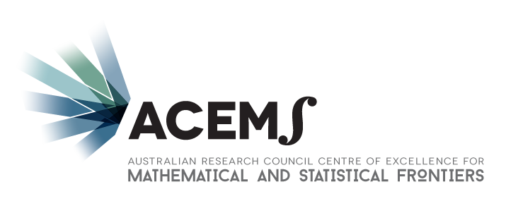

Statistical Mechanics of Soft Matter 2016
The Third SM2 Meeting will be held at the School of Mathematics and Statistics in the University of Melbourne, Parkville Campus, November 28-29, 2016.
SM2 is a local discussion meeting on the theme of Statistical Mechanics of Soft Matter. The aim is to discuss fundamentals and applications of equilibrium and non-equilibrium statistical mechanics. We are particularly interested in computational statistical mechanics relating to simple and complex liquids, polymers, biological materials and other forms of soft matter.
The meeting will consist of a single stream of talks of 25 minutes duration spread over two days, with ample time for discussion. The tone of the meeting is quite informal, and participants are welcome to talk about work in progress.
Students, postdocs and early career researchers are strongly encouraged to participate.
With the support of ACEMS, this year there will be a prize of $500 for the best talk by a student or recent graduate (completed in calendar year 2016).
There is no registration fee, but consequently there will be few niceties. You're very welcome to join a group of us for dinner 6:30pm on Monday, 28/11, at Lemongrass Thai Restaurant - please indicate if you are interested when registering.
Update: Programme and list of participants with talk titles available on the programme page.
Conference photos here!
Organiser
| Nathan Clisby | Conference email: smsq.meeting@gmail.com |
Local information
Venue
The meeting will be held in Theatre 1, Old Geology Building, University of Melbourne Parkville campus. See: https://maps.unimelb.edu.au/parkville/building/155
f the weather is fine, then morning and afternoon tea will be held in the bbq area on the northern side of the adjacent Richard Berry Building (on the map you can see there's a bit of a dent in the northern side). If not, then morning and afternoon tea will be in the staff tearoom of the Richard Berry Building.
Transport
The University of Melbourne is easily accessible via public transport. For more information see Public Transport Melbourne, http://ptv.vic.gov.au/. If travelling outside of the free tram zone in the Melbourne CBD you will need a myki card.Accommodation
The Travel Inn HotelCorner of Grattan St and Drummond St
Carlton VIC 3053
This is about a 5-10 minute walk from the conference venue. Lygon St is close by, which is a popular street for eating out and shopping.
Quest Carlton on Finlay Serviced Apartments
2-9 Finlay Place (off Lygon St)
Carlton VIC 3053
This is about a 5-10 minute walk from the conference venue. Lygon St is close by, which is a popular street for eating out and shopping.
Vibe Hotel Carlton
441 Royal Parade
Parkville VIC 3052
This is about a 15-20 minute walk from the conference venue, or alternatively a short tram ride (cost $3.20 one way). Princes park is across the road, which is especially useful if you have children traveling with you.
Rydges on Swanston
701 Swanston Street
Carlton, VIC 3000
This hotel is very close to the conference venue, less than 5 minutes away. Lygon St is close by, which is a popular street for eating out and shopping.
Other acommodation options can be found by searching for example on expedia, airbnb, stayz, wotif. Some suburbs which are local to the University of Melbourne are Carlton, North Melbourne, Melbourne CBD.
What to do
| Visit Victoria |
| That's Melbourne (activities and events) |
Sponsors
 | ARC Centre of Excellence for Mathematical and Statistical Frontiers (ACEMS) |